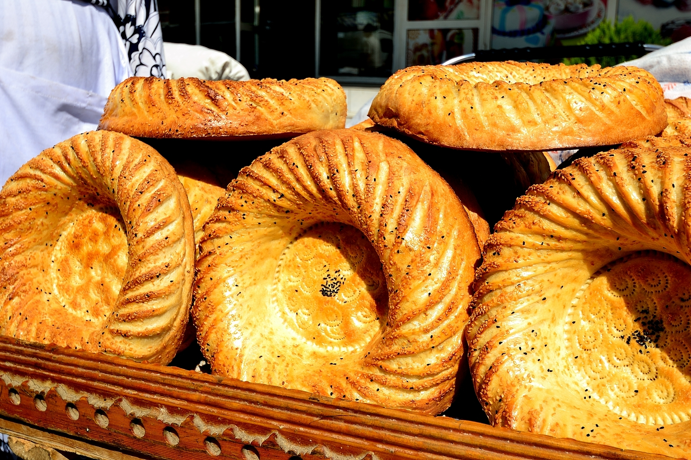
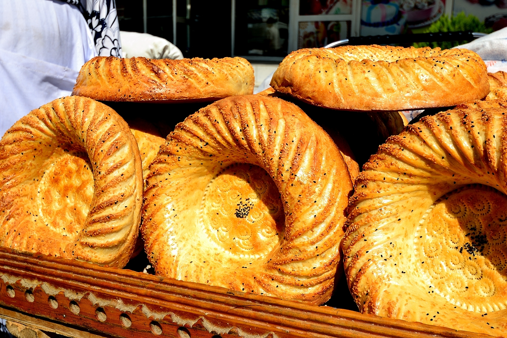

THE BEAUTINESS
OF CULTURE


Cuisine
Uzbek cuisine shares the culinary traditions of Turkic peoples across Central Asia.[1] There is a great deal of grain farming in Uzbekistan, so breads and noodles are of importance, and Uzbek cuisine has been characterized as "noodle-rich".[2] Mutton is a popular variety of meat due to the abundance of sheep in the country and it is a part of various Uzbek dishes. Uzbekistan's signature dish is palov (plov or osh or "pilaf"), a main course typically made with rice, pieces of meat, grated carrots and onions. It is usually cooked in a kazan (or deghi) over an open fire; chickpeas, raisins, barberries, or fruit may be added for variation. Although often prepared at home for family and guests by the head of household or the housewife, palov is made on special occasions by the oshpaz, or the osh master chef, who cooks the national dish over an open flame, sometimes serving up to 1,000 people from a single cauldron on holidays or occasions such as weddings. Oshi nahor, or "morning plov", is served in the early morning (between 6 and 9 am) to large gatherings of guests, typically as part of an ongoing wedding celebration. Other notable national dishes include: shurpa (shurva or shorva), a soup made of large pieces of fatty meat (usually mutton) and fresh vegetables; norin and lagman, noodle-based dishes that may be served as a soup or a main course; manti (also called qasqoni), chuchvara, and somsa, stuffed pockets of dough served as an appetizer or a main course; dimlama (a meat and vegetable stew) and various kebabs, usually served as a main course. Green tea is the national hot beverage taken throughout the day; teahouses (chaikhanas) are of cultural importance. The more usual black tea is preferred in Tashkent. Both are typically taken without milk or sugar. Tea always accompanies a meal, but it is also a drink of hospitality, automatically offered green or black to every guest. Ayran, a chilled yogurt drink, is popular in the summer, but does not replace hot tea.[citation needed] The use of alcohol is less widespread than in the west, but wine is comparatively popular for a Muslim nation as Uzbekistan is largely secular. Uzbekistan has 14 wineries, the oldest and most famous being the Khovrenko Winery in Samarkand (est. 1927). The Samarkand Winery produces a range of dessert wines from local grape varieties: Gulyakandoz, Shirin, Aleatiko, and Kabernet likernoe (literally Cabernet dessert wine in Russian).[3][4] Uzbek wines have received international awards and are exported to Russia and other countries in Central Asia. The choice of desserts in Uzbek cuisines are limited. A typical festive meal ends with fruit or a compote of fresh or dried fruit, followed by nuts and halvah with green tea.

 
